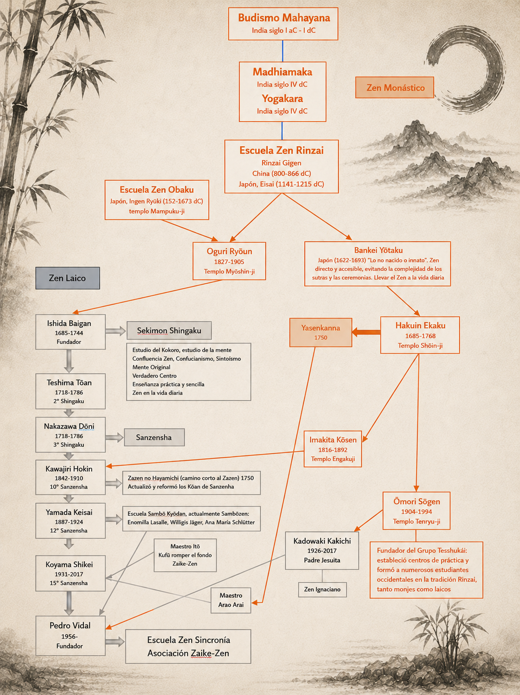
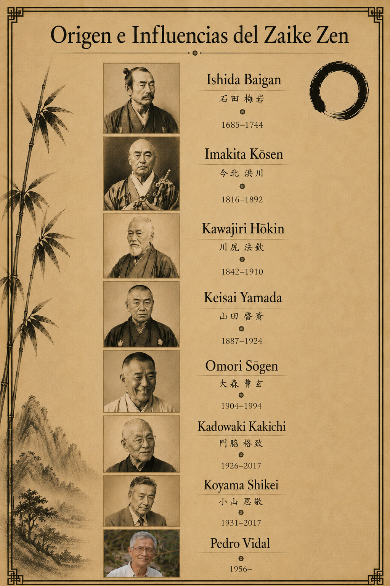
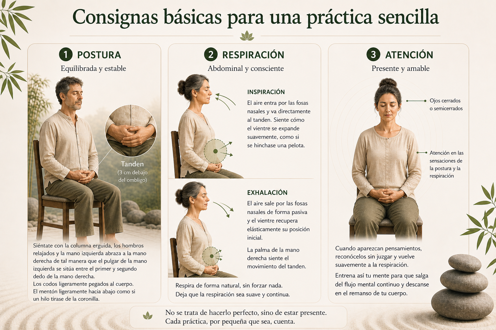
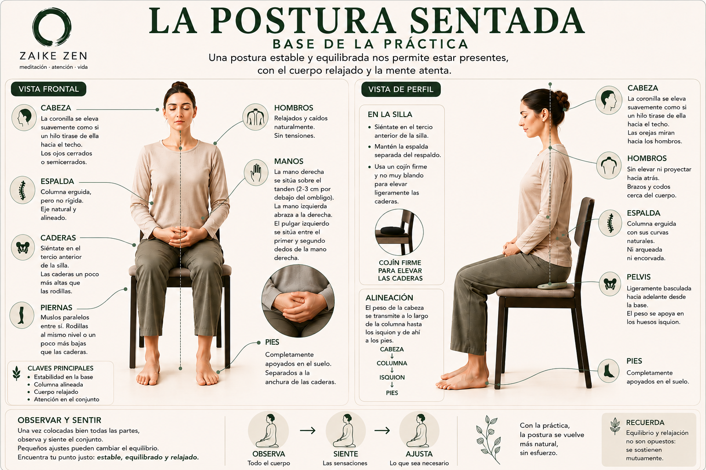
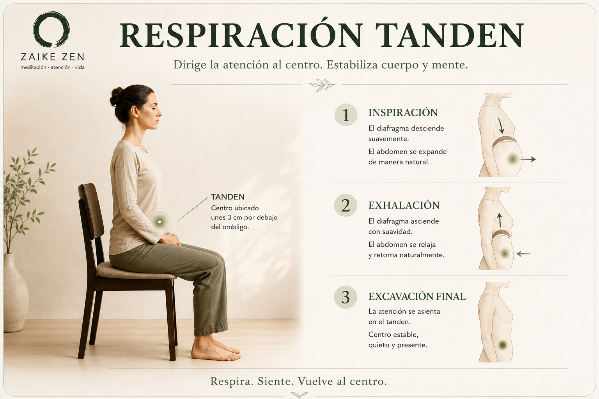
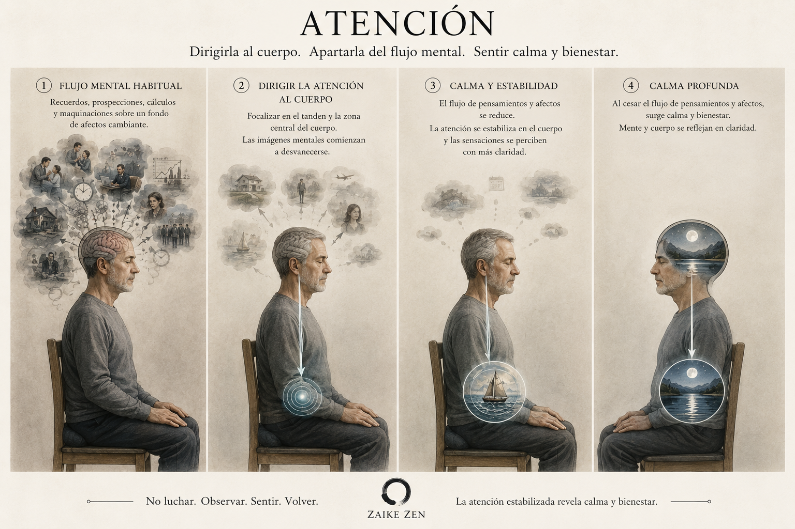
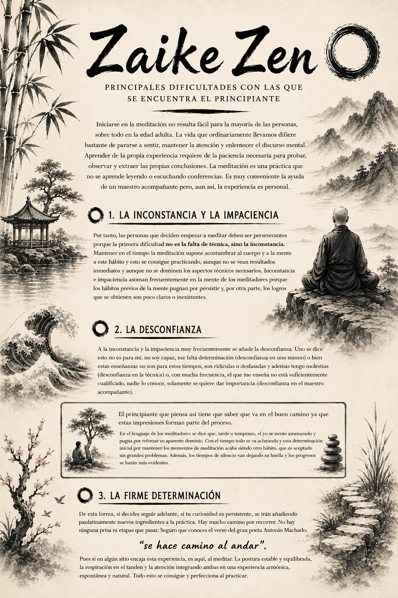

Sencillez
La práctica comienza en lo inmediato: sentarse, respirar, observar. No se trata de alcanzar un estado especial, sino de dejar de añadir dramatismo, rigidez o huida a lo que ya está ocurriendo.

Zaike Zen está pensado para personas que sienten curiosidad por la meditación y buscan una forma de practicarla de manera sencilla, honesta y profunda. No propone una huida del mundo, sino una forma de habitarlo con más presencia, con más claridad y con una relación menos rígida con uno mismo y con la realidad.

En Zaike Zen, el zen no se presenta como una doctrina cerrada, sino como una práctica de experiencia directa. Parte de una intuición sencilla y profunda: nada permanece por sí mismo, nada está aislado, y buena parte de nuestro sufrimiento tiene que ver con el intento de fijar lo que en realidad está cambiando.
El Zen laico es para cualquier persona, día a día.
¿Quieres vivir?
Ábrete a la vida a través de tu vida.
Zaike Zen significa un Zen accesible, un Zen para la vida cotidiana. No es un camino reservado a monjes o a contextos especiales, sino una práctica abierta a cualquier persona.
Todas las personas, independientemente de su situación, tienen en su interior la semilla de la iluminación. La práctica no consiste en añadir algo nuevo, sino en reconocer, cultivar y dejar que esa semilla se exprese en la propia vida.
Zaike Zen propone una aproximación sencilla y directa: integrar la atención, la presencia y la comprensión en los gestos más simples del día a día.
Zaike es un término japonés que significa laico. Por tanto, Zaike Zen hace referencia a una práctica de Zen laico, un Zen para todas las personas, independientemente de si tienen o no alguna confesión religiosa o espiritual.
Fue traído a España por la escuela Zen Sincronía, fundada y dirigida por el maestro Pedro Vidal, donde cuenta con numerosos practicantes.
Este proyecto está desarrollado por Santiago Díaz de Freijo (Koji Hôkinshin), discípulo de Pedro Vidal, continuando así el legado de un Zen abierto y flexible iniciado en Japón en el siglo XVIII por el movimiento Sekimon Shingaku y continuado posteriormente por la escuela Sanzensha durante muchas generaciones.
Esta tradición se mantiene en la actualidad a través de la escuela Sincronía y la Asociación Zaike Zen en España.
También se puede reconocer la influencia de la línea Zen Rinzai a través del maestro Hakuin Ekaku (1686–1769) y sus enseñanzas recogidas en Yasenkanna, así como del maestro laico Kawajiri Hôkin (1842–1910), décimo director de Sanzensha, y la inspiración del Zen ignaciano del maestro zen y jesuita Kadowaki Kakichi (1926–2017).



La meditación no es una técnica para escapar de la realidad, sino una forma de entrar en ella con más precisión. A través de la atención sostenida, empezamos a ver cómo surgen los pensamientos, las emociones y las reacciones, y cómo pueden dejar de dominarnos.


Siéntate con la espalda erguida y el cuerpo relajado. Puedes usar una silla o un cojín. No busques una postura perfecta: busca una postura estable, digna y habitable.
Observa la respiración tal como llega. No hace falta forzar nada. Solo acompaña el aire al entrar y al salir.
Cuando aparezcan pensamientos, recuerdos o inquietudes, no luches con ellos. Reconócelos y vuelve con amabilidad a la respiración.
La práctica comienza en lo inmediato: sentarse, respirar, observar. No se trata de alcanzar un estado especial, sino de dejar de añadir dramatismo, rigidez o huida a lo que ya está ocurriendo.
Estar presente no significa eliminar los pensamientos, sino dejar de ser arrastrado por ellos. La atención vuelve una y otra vez al momento actual, y en ese gesto repetido va apareciendo un espacio de claridad.
Lo que experimentamos no es una realidad fija. Nuestra vida, nuestro cuerpo, nuestras emociones e incluso nuestra identidad pueden entenderse como procesos y patrones en relación continua con el entorno.
Una postura estable y relajada crea las condiciones para que la meditación se sostenga con naturalidad. Aquí se describe cómo sentarse con dignidad y comodidad sin tensar el cuerpo.

La postura sentada es el fundamento de una práctica estable. Busca una posición en la que la espalda permanezca erguida y relajada, la pelvis ligeramente inclinada hacia delante y los hombros suaves. Siéntate sobre un cojín o en una silla, según lo que permita que tu cuerpo se sostenga sin tensión.
Apoya los pies de forma firme si estás en una silla, o cruza las piernas con comodidad si estás en el suelo. Deja que la cabeza se apoye sobre la columna sin derrumbarse, como si un hilo suave tirara desde la coronilla hacia arriba. La barbilla puede caer ligeramente, alargando la parte posterior del cuello.
Las manos pueden descansar con naturalidad sobre los muslos o en el regazo. Si prefieres una posición clásica, coloca las palmas hacia arriba con los pulgares tocándose suavemente, formando un pequeño triángulo. Si prefieres una postura más sencilla, deja las manos sobre las piernas con los dedos sueltos y relajados.
Antes de iniciar la meditación, toma un momento para ajustar la postura. Comprueba la alineación de la columna, la apertura del pecho y la relajación del abdomen. Si notas tensión, respira suavemente y deja que el cuerpo se acomode de nuevo.
La postura no está pensada para ser rígida, sino para ser un marco que permita la atención. Con el tiempo, el equilibrio entre estabilidad y suavidad se vuelve más sencillo y la práctica puede desarrollarse con menos distracción.
El tanden es una zona situada unos centímetros por debajo del ombligo sobre la que se dirige suavemente la atención durante la meditación. La respiración tanden ayuda a integrar postura, respiración y atención en una experiencia estable y natural.

El tanden es una zona situada a unos 2-3 centímetros por debajo del ombligo sobre la que se sitúa la atención durante la meditación. A la respiración que sigue esta indicación se le llama de forma genérica respiración tanden. Se trata de una respiración abdominal, diafragmática: al contraerse, el diafragma tira hacia abajo de la caja torácica y crea una presión negativa que permite la entrada de aire. Esta contracción hace que el diafragma baje y comprima las vísceras abdominales, lo que provoca que el vientre se distienda y que notemos esa sensación hacia adelante y abajo como si se hinchara una pelota. Durante la exhalación, el diafragma se relaja y el aire sale pasivamente. En este momento la distensión abdominal cesa y el vientre vuelve a su posición inicial.
En una primera fase, el proceso se podría describir de la siguiente manera:
"Entra el aire por las fosas nasales durante la inspiración y se dirige directamente al tanden. Apreciamos cómo, durante la inspiración, se distiende el vientre en la zona del tanden con una sensación similar a si se hinchara una pelota. Durante la exhalación, el aire sale pasivamente por las fosas nasales, el vientre vuelve pasivamente a su posición inicial y sentimos cómo si se deshinchase la pelota en la zona del tanden. La palma de la mano derecha, que está situada en esta zona, puede notar cómo se produce este movimiento en el tanden. La atención se dirige a las sensaciones que provienen de la postura y la respiración, observando cómo el proceso se realiza de forma natural y sin esfuerzo alguno. Si mantenemos la atención, con la práctica se apreciarán mejor los matices de estas sensaciones y la coordinación de todo el proceso. El resultado final es que la postura, la respiración y la atención se integran en una experiencia que se mantiene en el tiempo."
En una segunda fase, cuando la primera está bien asentada y se realiza casi inconscientemente, podemos profundizar en la práctica de algunas instrucciones que focalizarán más la atención y darán más profundidad a la concentración. La inspiración es igual que la anterior y los cambios se producen durante el final de la exhalación:
"Entra el aire por las fosas nasales durante la inspiración y se dirige directamente al tanden. Apreciamos cómo, durante la inspiración, se distiende el vientre en la zona del tanden con una sensación similar a si se hinchara una pelota. Durante la exhalación, el aire sale pasivamente por las fosas nasales y sentimos como si se deshinchase la pelota en la zona del tanden. Al final de la exhalación, contraemos suavemente los músculos de la zona del tanden haciendo que el vientre se excave ligeramente, ayudando así a expulsar parte del aire residual al final de la exhalación. Cuando esta contracción cesa y los músculos abdominales se relajan, entra el aire de nuevo por las fosas nasales iniciando la inspiración y, con ella, la suave distensión en el vientre que le acompaña. La palma de la mano derecha puede notar este pequeño "vuelco del tanden". La atención se centra en estas sensaciones internas regulando los movimientos del tanden para que no sean bruscos sino suaves y armónicos. Con la práctica se alcanzará mayor delicadeza en los movimientos y las sensaciones serán más sutiles, de tal manera que todo el proceso se integra sin ningún esfuerzo."
Podríamos incluso hablar de una tercera fase en la que se introducen pequeños matices para que la atención se focalice mejor y más prolongadamente, al tiempo que la concentración pueda alcanzar mayores grados de intensidad. Esta tercera fase es recomendable que se realice bajo la supervisión de un maestro acompañante que resuelva dudas y oriente adecuadamente toda la práctica.
La atención permite dirigir la mirada interior hacia las sensaciones del cuerpo, estabilizando la práctica y apartándola poco a poco del flujo mental habitual. Observar y sentir no consiste en luchar contra los pensamientos, sino en volver con claridad al cuerpo presente.

Hemos visto que tanto en la adopción de la postura correcta como en la regulación de la respiración tanden la atención juega un papel esencial para realizar los ajustes necesarios durante la práctica. Al principio todo es un poco ensayo, error y mejora, es un proceso de aprendizaje en definitiva y, por tanto, requiere de atención y perseverancia.
El cambio fundamental es que la atención deja de estar enfocada en el flujo mental habitual y pasa a detenerse en las sensaciones que provienen del cuerpo, tanto para mantener la postura como para integrarla con la respiración. Cuanto más correcta es la postura más fácil es realizar la respiración tanden y cuanto más integrada está la respiración mejor se mantiene la postura correcta. Una favorece a la otra si la atención detecta con sutileza las pequeñas desviaciones que habitualmente se producen y nos permite corregirlas, sobre todo al principio.
El resultado es que, para que el proceso se armonice y se mantenga, es necesario enfocar y concentrar nuestra atención sobre las sensaciones corporales y, con ello, distraer a nuestra mente de su flujo habitual. Pasamos a dedicarle un tiempo cada vez mayor y más valioso a observar y sentir. Desarrollamos nuestra mirada interior y así depositamos una atención amorosa sobre nosotros mismos. Al final, el hábito de la meditación se abrirá camino y nuestra mente podrá observar los cambios.

Los materiales que están detrás de Zaike Zen desarrollan con más amplitud cuestiones como la impermanencia, la vacuidad, la compasión, la no dualidad y la realidad entendida como proceso.
La impermanencia no significa que nada exista, sino que nada posee una esencia fija e independiente. Las cosas aparecen, se mantienen durante un tiempo y cambian.
Esta comprensión no invita al nihilismo, sino a una manera más sobria y más libre de percibir.
La vacuidad no es la nada. Es la comprensión de que los fenómenos existen por dependencia mutua. Nada aparece aislado, nada se sostiene por sí mismo.
Cuando la mente deja de aferrarse a oposiciones rígidas, empieza a percibir la realidad con menos distorsión.
También puede entenderse nuestra experiencia como una red de patrones: procesos que se sostienen durante un tiempo y luego se transforman.
Cuando el patrón del ego se vuelve rígido aparece sufrimiento; cuando se vuelve flexible, aparece una relación más lúcida con uno mismo y con el entorno.
La comprensión profunda no queda encerrada en la interioridad. Cuando se debilita la ilusión de separación, surge con más naturalidad la compasión.
La práctica se vuelve entonces una ética vivida.
Si quieres compartir una reflexión, hacer una pregunta o iniciar un diálogo, puedes escribirme desde aquí.